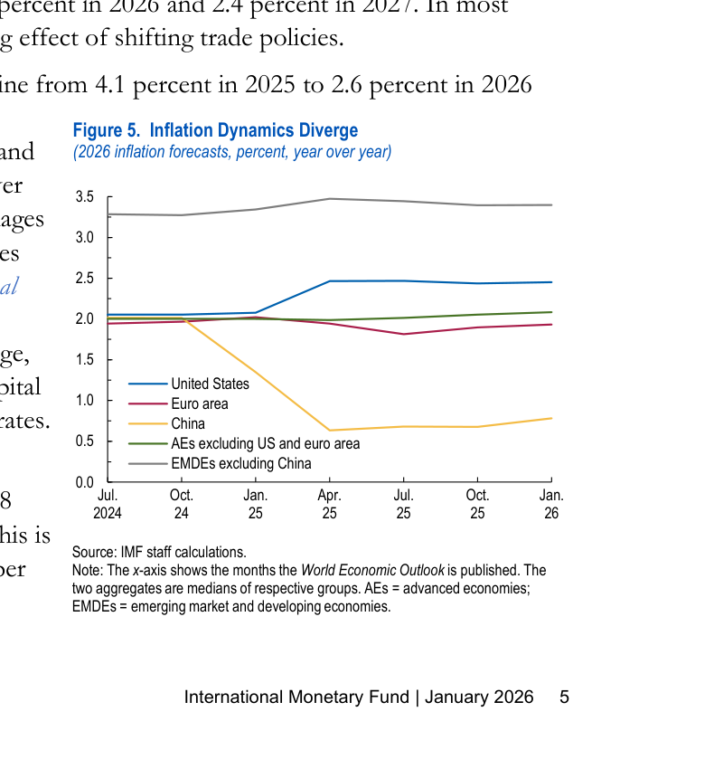
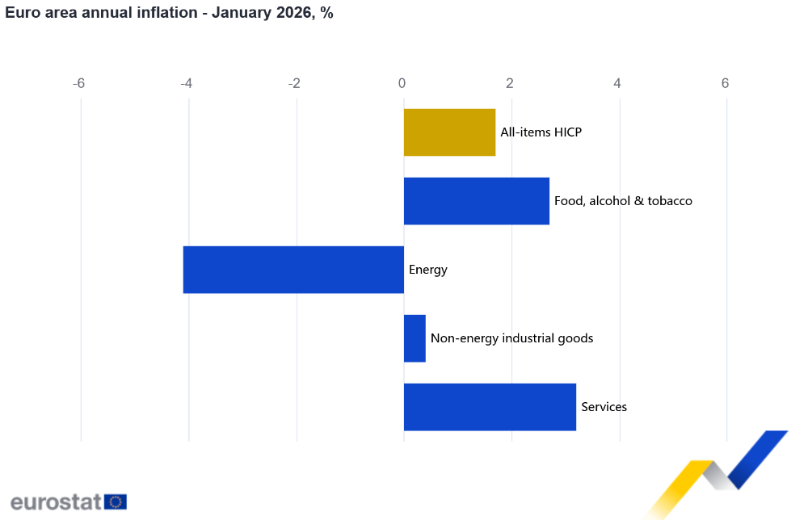

Inflation 2026: the new challenges after the peak
Affordability, sticky services, and the policy tightrope
2026-02-08
How to use this deck
- Designed for ~30 minutes (~2 minutes/slide, plus 5 minutes Q&A)
- Slide text is intentionally light; talk track is in speaker notes
- Visuals are in
images/ (bundled)
Challenge #3 — energy, geopolitics & trade policy volatility
- Energy can swing headline inflation quickly (down or up)
- Geopolitical shocks hit commodities and supply chains first
- Trade policy and tariffs can reintroduce price pressure (and uncertainty)
Challenge #4 — food prices, climate shocks, and “renewed” inflation risk
- Food inflation is socially and politically high-stakes
- Climate patterns (e.g., El Niño) can hit harvests and global food prices
- Even if overall markets are well supplied, shocks can be sharp and localized
Challenge #5 — business stress: margins, refinancing, insolvencies
- The inflation hangover shows up in cash flow (input costs) and credit (refinancing at higher rates)
- A slowdown + tight credit conditions tend to hit SMEs first
- Rising bankruptcies create second-round effects: job losses, supplier defaults, tighter lending
Challenge #6 — fiscal pressure: the “interest bill” problem
- Governments face tighter trade-offs: debt service vs. investment vs. social support
- Broad subsidies can reduce pain now but may worsen inflation or debt sustainability
- Fiscal-monetary mix matters more when inflation is close to target
Central banks in 2026: disinflation, but no victory lap
- Fed: holding 3.5%–3.75%, with inflation “somewhat elevated”
- BoE: Bank Rate 3.75%; sees inflation returning near target, but watches wage/services persistence
- ECB: deposit facility 2.00% (current operational anchor)

Disinflation ≠ relief: the price level is the problem
- People experience levels (rent, groceries, energy bills), not just rates
- High-price essentials crowd out discretionary spending
- Perceived unfairness (“prices imposed”) becomes a political and workplace issue
Challenge #1 — the “last mile”: services inflation & wages
- Services inflation is still high in many advanced economies
- Wage growth and inflation expectations matter more when goods disinflation fades
- Policy risk: easing too soon can re-ignite persistence
Challenge #2 — housing: the slow-moving inflation engine
- Housing is both a price-level shock and a monetary-policy transmission channel
- Supply constraints make housing inflation “sticky”
- Higher rates can cool demand, but can also suppress new supply (construction) and keep rents elevated
Where inflation stands right now (Jan/Feb 2026 snapshot)
- Euro area: headline 1.7% y/y (flash, Jan 2026)
- UK: CPI inflation 3.4% (Dec) — expected back around 2% from April
- US: Fed funds target range held at 3.5%–3.75% (Jan FOMC)
- Global: headline inflation expected to decline from 4.1% (2025) → 3.8% (2026)
A quick picture: what’s driving euro-area inflation now?

Practical playbook (what to do with this)
- Pricing & contracts: shorten price locks, use indexation where acceptable, monitor competitor resets
- Wages & retention: focus on essentials (housing/transport/childcare), communicate total rewards clearly
- Procurement & supply: dual-source critical inputs; build “shock clauses” for energy/transport
- Finance: review debt maturities; stress-test cash flow under “rates stay high” + “growth slows” scenarios
- Customer & citizen empathy: redesign journeys around affordability (smaller packs, cheaper tiers, flexible plans)
Five takeaways to land
- Lower inflation doesn’t mean lower prices — affordability can stay politically and economically dominant.
- The remaining inflation risk is increasingly domestic: services, wages, housing.
- “Shockable” components (energy/food/trade) still drive volatility and policy caution.
- Higher rates are now part of the inflation story: refinancing stress, insolvencies, and fiscal constraints.
- The winning strategy is resilience: scenario planning + flexibility in pricing, supply, and balance sheets.
Sources (selected)
- Eurostat (flash HICP + component chart): https://ec.europa.eu/eurostat/web/products-euro-indicators/w/2-04022026-ap
- Bank of England (Monetary Policy Report, Feb 2026): https://www.bankofengland.co.uk/monetary-policy-report/2026/february-2026
- Federal Reserve (FOMC statement, Jan 28 2026): https://www.federalreserve.gov/newsevents/pressreleases/monetary20260128a.htm
- ECB (key interest rates table): https://www.ecb.europa.eu/stats/policy_and_exchange_rates/key_ecb_interest_rates/html/index.en.html
- IMF (WEO Update, Jan 2026): https://www.imf.org/en/publications/weo/issues/2026/01/19/world-economic-outlook-update-january-2026
- UNCTAD (World Economic Situation and Prospects 2026): https://unctad.org/publication/world-economic-situation-and-prospects-2026
- Allianz (Global Insolvency Outlook 2026-27): https://www.allianz.com/en/economic_research/insights/publications/specials_fmo/251021-insolvency-outlook.html
- IMF (debt + higher-rate fiscal constraints blog): https://www.imf.org/en/blogs/articles/2025/04/23/rising-global-debt-requires-countries-to-put-their-fiscal-house-in-order
- World Bank (Food Security Update): https://www.worldbank.org/en/topic/agriculture/brief/food-security-update
- ECB (El Niño and food prices): https://www.ecb.europa.eu/press/economic-bulletin/focus/2023/html/ecb.ebbox202306_01~36e78cc75e.en.html
- Guardian (Feb 2026 El Niño risk reporting): https://www.theguardian.com/environment/2026/feb/08/global-weather-el-nino-pacific-ocean-high-temperatures-2027
- TIME (Davos 2026 affordability squeeze essay): https://time.com/collections/davos-2026/7339214/global-affordability-crisis-cost-of-living-inflation-politics/